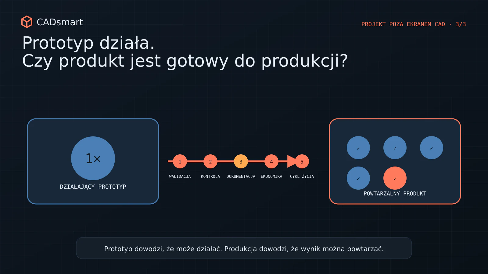
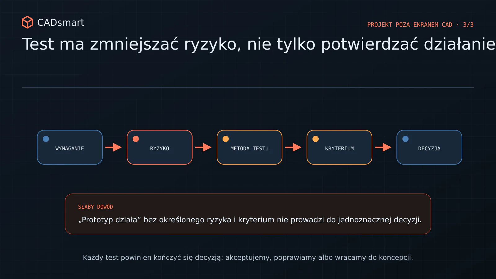
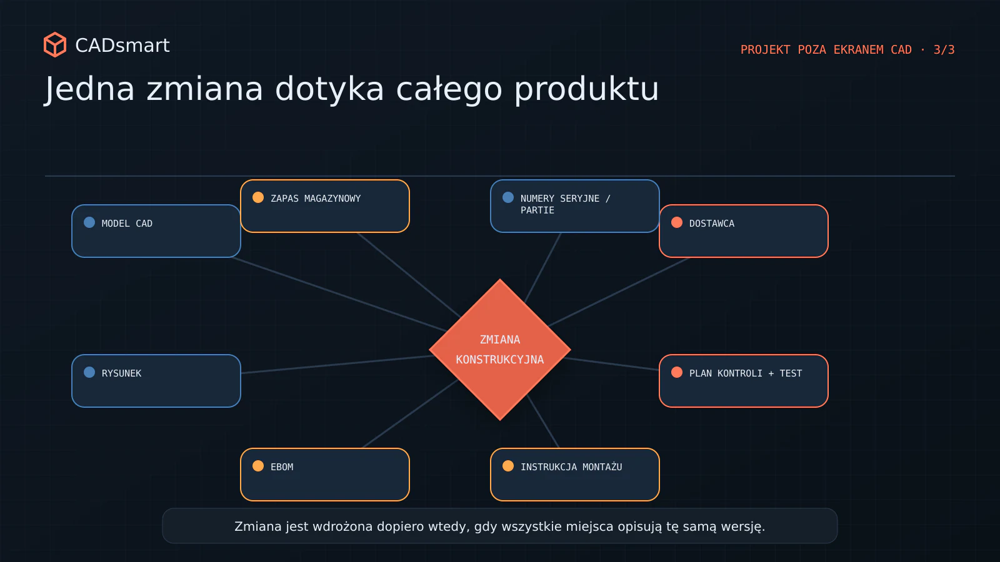
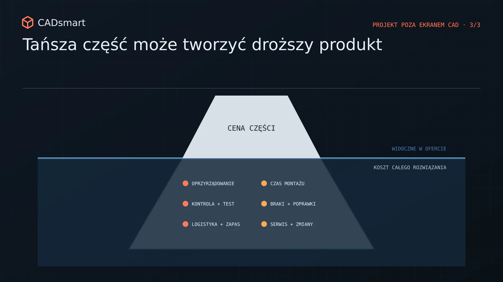
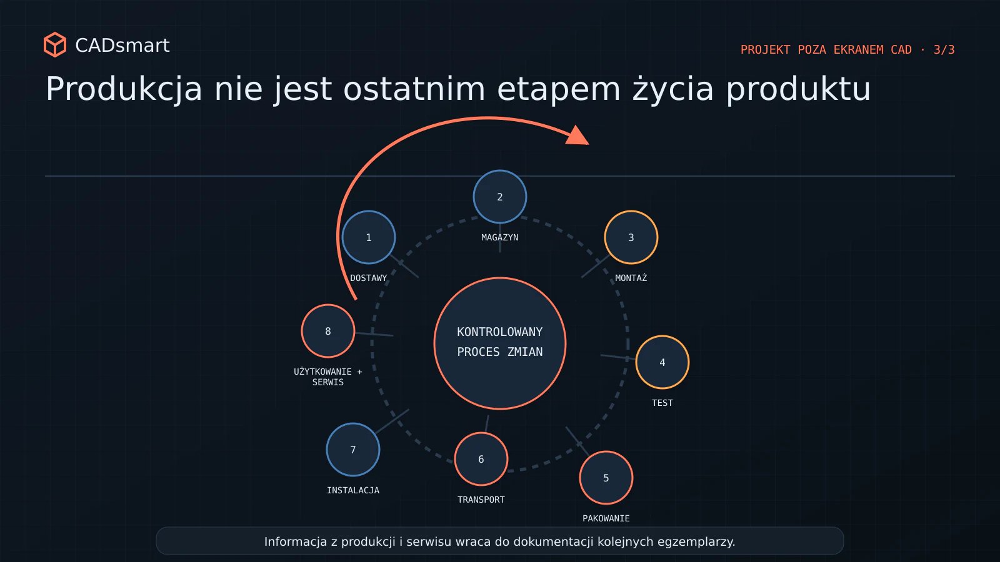

Prototyp działa. Co musi się wydarzyć przed uruchomieniem produkcji?
Jak przejść od działającego prototypu do powtarzalnego produktu: testy, dokumentacja, zmiany, koszt, montaż i cykl życia.

Działający prototyp to dopiero początek
Działający prototyp daje zespołowi coś bardzo potrzebnego: dowód, że główna koncepcja ma sens. Mechanizm wykonuje ruch, konstrukcja przenosi obciążenie, urządzenie realizuje funkcję, a prezentacja dla interesariuszy wreszcie pokazuje coś namacalnego. To ważny moment, ale łatwo wyciągnąć z niego zbyt daleki wniosek: „produkt jest prawie gotowy”.
Prototyp potwierdza wybrane hipotezy. Produkcja wymaga natomiast powtarzalności, kontrolowalności, aktualnej dokumentacji, stabilnego łańcucha dostaw i procesu, który nie zależy od wiedzy jednej osoby. Egzemplarz złożony przez zespół R&D może działać dzięki poprawkom wykonanym na miejscu, ręcznemu dopasowaniu i znajomości wszystkich wcześniejszych iteracji. Fabryka nie powinna potrzebować tego samego kontekstu. Przejście od „działa” do „można to powtarzalnie wytwarzać” wymaga domknięcia pięciu obszarów: walidacji, kryteriów akceptacji, dokumentacji i zmian, ekonomiki całego produktu oraz jego życia po opuszczeniu produkcji.
1. Test ma potwierdzić ryzyko, a nie tylko działanie
Pierwszy prototyp zwykle odpowiada na najważniejsze pytanie funkcjonalne. Kolejne testy powinny być już budowane wokół ryzyk. Inaczej zespół może wielokrotnie potwierdzać to, co wie, i nadal nie sprawdzić warunków, które zdecydują o powodzeniu produktu.
Plan walidacji warto rozpocząć od mapy ryzyk i wymagań. Dla każdego kluczowego założenia trzeba określić:

- co dokładnie chcemy potwierdzić;
- jaki egzemplarz, konfiguracja i warunki są reprezentatywne;
- co mierzymy i z jaką dokładnością;
- ile powtórzeń potrzebujemy do podjęcia decyzji;
- jaki wynik uznajemy za pozytywny;
- co zrobimy, jeśli wynik będzie graniczny lub negatywny.
Nie każdy test musi być rozbudowany. Ważne, aby był projektowany pod decyzję. Czasem wystarczy proste oprzyrządowanie, które umożliwi powtarzalne obciążenie i pomiar. W innym przypadku potrzebne będzie porównanie kilku czynników, na przykład poprzez planowanie eksperymentu (DOE), aby odróżnić wpływ poszczególnych parametrów.
W pracy nad produktami elektromechanicznymi przygotowywałem protokoły i raporty testowe, kryteria akceptacji oraz stanowiska wspierające testy produkcyjne. Wspólnym mianownikiem było przełożenie wymagania na powtarzalną metodę. Bez tego nawet duża liczba prób może pozostawić zespół bez jednoznacznej odpowiedzi.
2. Kryterium akceptacji musi działać także bez konstruktora obok
Podczas prototypowania zespół toleruje niejednoznaczność. Konstruktor wie, jak ułożyć przewód, z jaką siłą dokręcić połączenie i który dźwięk jest normalny. W produkcji taka wiedza musi zostać zamieniona w sposób pracy, który można przekazać, wykonać i skontrolować. Kryterium „zgodne z modelem” nie wystarcza. Potrzebne są cechy krytyczne, metody kontroli oraz granice decyzji. Trzeba również sprawdzić, czy wybrany wymiar lub parametr rzeczywiście da się zmierzyć w warunkach produkcyjnych.
Dobry plan kontroli łączy trzy poziomy:
- Część: czy kluczowe cechy wykonano zgodnie z dokumentacją?
- Montaż: czy proces połączenia i regulacji daje właściwy wynik?
- Produkt: czy gotowy egzemplarz spełnia funkcję oraz wymagania bezpieczeństwa?
Jeśli produkt przechodzi wyłącznie test końcowy, wada może zostać wykryta bardzo późno, gdy koszty części i montażu są już poniesione. Jeśli kontrolujemy wszystko bez związku z funkcją, proces staje się drogi i powolny. Celem jest kontrola właściwych cech w miejscu, w którym informacja pozwala jeszcze skutecznie zareagować.
3. Dokumentacja musi opisywać jedną aktualną wersję produktu
Prototyp może powstać z mieszanki plików, notatek, wiadomości i ręcznych poprawek. Przy małej liczbie osób zespół zwykle wie, co zostało zmienione. Ten model przestaje działać, gdy rośnie liczba części, dostawców, stanowisk i egzemplarzy.
Gotowość produkcyjna wymaga spójnego pakietu informacji. W zależności od produktu może obejmować między innymi:

- zatwierdzone modele i rysunki z rewizjami;
- strukturę EBOM, czyli inżynierską listę materiałową;
- specyfikacje komponentów handlowych;
- instrukcje montażu i wymagane momenty dokręcania;
- procedury kontroli i testów;
- wymagania dotyczące oznaczeń, pakowania i transportu;
- ślad decyzji o odstępstwach oraz zmianach.
Sama obecność plików nie oznacza jeszcze kontroli konfiguracji. Zespół powinien potrafić odpowiedzieć: która rewizja jest aktualna, gdzie jest zatwierdzona, od którego egzemplarza obowiązuje i jakie inne elementy zmienia. W środowisku PLM procesy ECR/ECO - zgłoszenia i zatwierdzenia zmiany inżynierskiej - pomagają przeprowadzić zmianę przez produkt zamiast poprawiać pojedynczy plik. Ma to znaczenie szczególnie wtedy, gdy jedna decyzja wpływa jednocześnie na model, rysunek, BOM, zapas magazynowy, instrukcję montażu i test.
Pracując z Arena PLM, EBOM oraz procesami zmian, widziałem, że narzędzie jest tylko częścią rozwiązania. Najpierw trzeba ustalić odpowiedzialność: kto inicjuje zmianę, kto ocenia jej wpływ, kto ją zatwierdza i w jaki sposób produkcja otrzymuje jednoznaczną informację o wdrożeniu.
4. Optymalizujemy koszt produktu i procesu, nie cenę pojedynczej części
Po potwierdzeniu funkcji naturalnie pojawia się presja na obniżenie kosztu. Najłatwiej porównywać ceny części, ale to tylko fragment ekonomiki produktu. Tańszy komponent może wymagać dodatkowego uchwytu, dłuższego montażu, osobnej kontroli lub częstszych poprawek. Droższa część może z kolei uprościć złożenie, ograniczyć liczbę elementów złącznych i skrócić test. Decyzję warto więc oceniać przez całkowity koszt wytworzenia i obsługi.
Przydatne pytania obejmują:

- ile operacji i zmian narzędzia wymaga montaż;
- które czynności są podatne na pomyłkę;
- czy potrzebne jest specjalne oprzyrządowanie;
- jaki jest koszt kontroli i testu;
- ile wariantów części utrzymujemy w magazynie;
- czy dostawca może powtarzalnie utrzymać wymagane tolerancje;
- co stanie się z kosztem przy docelowym wolumenie.
To właśnie tutaj DFMA - projektowanie z myślą o wytwarzaniu i montażu - staje się narzędziem biznesowym. Mniej części, prostsze bazowanie, lepszy dostęp i ograniczenie możliwości błędnego montażu mogą jednocześnie skrócić czas, poprawić jakość i zmniejszyć ryzyko.
Przy wdrażaniu produktów do produkcji masowej oraz budowaniu procedur R&D i produkcji kluczowe było przejście od jednego działającego egzemplarza do procesu, który daje ten sam wynik wielokrotnie. To wymaga współpracy konstrukcji, zakupów, jakości, dostawców i osób odpowiedzialnych za montaż - nie jednorazowej rundy „cost down” na końcu.
5. Produkcja nie jest ostatnim etapem życia produktu
Gotowy wyrób trzeba jeszcze zabezpieczyć, przetransportować, zainstalować, użytkować, serwisować i kiedyś wycofać. Każdy z tych etapów może ujawnić założenie pominięte w prototypie. Pakowanie jest dobrym przykładem. Produkt, który działa w laboratorium, może nie przetrwać transportu albo wymagać kosztownej skrzyni, jeśli konstrukcja nie uwzględnia punktów podparcia, elementów podatnych na uszkodzenie i sposobu podnoszenia. W projekcie realizowanym dla klienta w USA pakowanie było częścią zakresu obok konstrukcji, kosztu i koordynacji. Nie było dodatkiem po zakończeniu projektowania, lecz warunkiem dostarczenia rozwiązania.
Podobnie jest z serwisem. Dostęp do części zużywalnej, możliwość diagnozy, czas demontażu i identyfikacja rewizji wpływają na koszt już po sprzedaży. Jeśli zespół nie uwzględni ich przed zamrożeniem projektu, późniejsze usprawnienia mogą wymagać zmian w obudowie, okablowaniu lub architekturze podzespołów. Przed uruchomieniem produkcji warto więc przeprowadzić produkt przez pełny scenariusz:
- odbiór komponentów;
- magazynowanie i identyfikację;
- montaż oraz test;
- pakowanie i transport;
- instalację u klienta;
- użytkowanie, serwis i obsługę zmian;
- wycofanie lub wymianę.

Kiedy prototyp staje się produktem?
Nie ma jednej ceremonii, która zmienia prototyp w produkt. Gotowość powstaje wtedy, gdy dowody, dokumentacja i proces zaczynają tworzyć spójny system.
Przed skalowaniem warto potwierdzić, że:
- kluczowe wymagania mają wyniki testów i jednoznaczne kryteria;
- cechy krytyczne można wytworzyć oraz skontrolować;
- dokumentacja opisuje jedną zatwierdzoną konfigurację;
- zmiany mają właścicieli i kontrolowany sposób wdrożenia;
- koszt oceniono na poziomie produktu, montażu, jakości i serwisu;
- pakowanie, transport, instalacja oraz cykl życia nie opierają się na improwizacji.
Działający prototyp jest ważnym dowodem. Gotowy do produkcji produkt wymaga jednak czegoś więcej: powtarzalnego sposobu osiągania tego samego wyniku przez dostawców, produkcję i kontrolę - również wtedy, gdy zespół R&D nie stoi obok.
Jeżeli przygotowujesz produkt do NPI, uruchomienia produkcji lub przekazania dokumentacji dostawcom, mogę pomóc w przeglądzie gotowości produkcyjnej, DFMA, strukturze EBOM, planie testów i uporządkowaniu procesu zmian.
Sprawdź gotowość do produkcji
Chcesz ocenić, czy działający prototyp można już powtarzalnie wytwarzać i kontrolować?
Rozwiń 9 pytań kontrolnych
- Czy największe ryzyka potwierdzono na reprezentatywnej liczbie egzemplarzy, w warunkach granicznych i z uwzględnieniem zmienności części, montażu oraz użytkowania?
- Czy każdy test jest powiązany z wymaganiem, mierzalnym kryterium akceptacji i ustaloną decyzją po wyniku pozytywnym, negatywnym lub granicznym?
- Czy osoba spoza zespołu R&D potrafi na podstawie dokumentacji wykonać kontrolę, używając wskazanego narzędzia, bazowania, warunków pomiaru i granic wyniku?
- Czy proces postępowania z niezgodnością określa sposób oznaczenia wyrobu, właściciela decyzji oraz zasady odstępstwa, poprawki i ponownej kontroli?
- Czy można odtworzyć konfigurację dowolnego egzemplarza i wskazać obowiązujące dla niego rewizje modeli, rysunków, EBOM, instrukcji oraz testów?
- Czy każda zmiana ma zatwierdzenie, określony moment wdrożenia i zakres obowiązywania oraz analizę wpływu na dokumentację, zapas, dostawców, produkcję i już zbudowane egzemplarze?
- Czy koszt docelowy obejmuje wolumen, robociznę, oprzyrządowanie, kontrolę, braki, logistykę i serwis, zamiast przenosić oszczędność z części na inny etap?
- Czy można usunąć część, operację, regulację albo możliwość błędnego montażu bez pogorszenia funkcji i obsługiwalności produktu?
- Czy pakowanie, transport, instalację i serwis sprawdzono w rzeczywistych warunkach, a informacje z produkcji i eksploatacji wracają do kontrolowanego procesu zmian?
Chcesz zachować pytania na później?